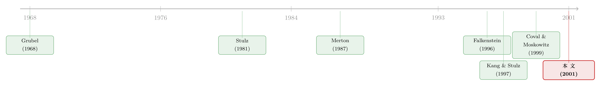

「外资偏好」是个伪命题——他们只是机构而已
本文读的是 Dahlquist & Robertsson (2001, Journal of Financial Economics)：用瑞典上市公司逐家、逐年的持股数据，他们发现外资偏爱大公司、低股利、高现金的企业；但真正的反转在于——一旦把外资和「本国机构投资者」放在一起比，这些所谓的「外资偏好」几乎原样重现。于是他们下了一个反直觉的结论：我们看到的不是 外资偏好 (foreign investor bias)，而是 机构投资者偏好 (institutional investor bias)。
1 一个被反复讲述的谜题
国际金融里有一个讲了几十年、却始终没讲完的故事，叫 本土偏好 (home bias)：按标准的投资组合理论，一个理性的投资者应当持有「世界市场组合」，可现实里，几乎每个国家的投资者都把绝大部分财富押在了自己家门口的股票上。Grubel (1968)、Levy and Sarnat (1970) 早就算清楚了——多持有一点国际分散化的资产，福利是会上升的。可大家偏偏不这么做。
为什么不？过去三十年，文献给出的答案大致分两类。一类说，投资者面对的是 壁垒 (barriers)：外汇管制、预提税、显性的投资限制。但 French and Poterba (1991)、Cooper and Kaplanis (1994)、Tesar and Werner (1995) 几乎异口同声地指出，在发达市场，这些显性壁垒过去二十年已被大幅拆除，根本撑不起我们观察到的组合配置。于是第二类解释登场了——隐性壁垒 (implicit barriers)，核心是信息不对称：外国人对一国及其公司「了解得更少」，所以他们只敢买自己熟悉的那部分。
到这一步，故事还停留在「国家与国家之间」。真正把镜头推近一格的，是 Kang and Stulz (1997)。
2 把镜头推近：从「国家」到「公司」
Kang and Stulz (1997) 没有再去比较「日本人持有的外国股票 vs. 本国股票」这种总量，而是反过来问：外国人在日本这个特定市场里，究竟挑了哪些公司持有？ 他们发现，外资在日本系统性地低配了小公司和高杠杆公司，而对出口销售额大的公司持股偏多。整体证据指向一个朴素的猜想——外国人投资于他们「了解得更多」的公司；本土偏好，本质上是信息不对称的产物。
Dahlquist 和 Robertsson 这篇论文，走的正是 Kang-Stulz 这条路，但他们手里握着一副更好的牌。
首先，他们的样本是 瑞典 (Sweden)——一个对识别问题异常友好的实验场。一方面，瑞典政治稳定，几乎不存在「政治风险」这一类干扰；另一方面，瑞典对外资的最后一道投资限制恰好在 1993 年被废除。换句话说，这是一个显性壁垒「刚刚拆完」的市场，研究者得以把注意力干干净净地放在隐性壁垒上。
接着，一个自然的问题是：瑞典的外资到底有多少？这正是这篇论文最先抛出的一组数字，而它本身就足够震撼。
3 数据：一个三年里翻了十五倍的市场
数据来自瑞典的 证券登记中心 (Värdepapperscentralen)，再经由 SIS Ägarservice 把那些挂在托管银行名下的「名义持有人」一一还原成真实股东。样本覆盖 1991 至 1997 年所有在瑞典上市的公司，逐家给出每年年末由外国投资者持有的股权比例。
先看总量。1991 到 1997 这七年间，瑞典股市总市值从 SEK 535 billion 涨到 SEK 2136 billion，翻了约四倍；而外资持股从 SEK 44 billion 暴涨到 SEK 692 billion，翻了 十五倍以上。换算成比例，外资占比从 8.2% 一路攀到 32.4%。
这里有一个常被忽略、却很关键的对照：同期瑞典在 FT/S&P 世界市场指数里的权重也涨了大约四倍。如果外资只是被动地「跟着世界指数配权重」，那么他们在瑞典的投资增幅也应该是四倍左右。可实际增幅是十五倍。这一个简单的数量级落差，就已经否定了「外资只是在复制市场组合」这个零假设。
这背后部分是制度变迁推动的。1993 年之前，多数瑞典公司有两类股票：受限股 (restricted shares) 和 非受限股 (unrestricted shares)，外国人只能持有后者，且非受限股被法律限制在 20% 投票权、40% 股权以内。这道限制 1993 年 1 月正式废除（很多公司 1992 年就已获准转换）。门一打开，资本就涌了进来。
4 第一步：外资到底偏爱什么样的公司？
有了逐家公司的持股数据，作者做的第一件事，是几乎照搬 Kang and Stulz (1997) 的那套公司特征，看外资持股与它们的关系。这些特征包括：规模 (Size)（回归里取市值的对数）、股利率 (Dividend yield)、收益率 (Return)、系统性风险 (Systematic risk)（即市场模型的 beta）、特质风险 (Idiosyncratic risk)、账面市值比 (Book-to-market)、流动比率 (Current ratio)、杠杆比率 (Leverage ratio) 和 净资产收益率 (Return on equity)。
最直观的证据来自一次简单的五分位排序。把 1997 年末所有上市公司按市值排成五档：
- 最小的那一档（Q1），平均市值约
SEK 110 million，外资（等权平均）持股10%； - 最大的那一档（Q5），平均市值高达
SEK 34 billion，外资持股将近30%。
规模的偏好一目了然，且作者验证了它在 1991–1996 每一年、以及九个行业内部都稳健存在。除此之外，外资还更青睐 低账面市值比（成长型）和 低股利率 的公司，并且偏好资产负债表上 现金充裕 的企业。
到这里，故事似乎和 Kang-Stulz 完全吻合：外资偏好大公司，而「大」是「为外界所熟知」的一个粗糙代理。但作者并不满足于「规模」这个笼统的标签——因为规模可能和一大堆别的属性正相关。于是他们追问：在「大」的背后，究竟是什么真正吸引了外资？
5 真正关键的一步：拆开「大公司偏好」
为了把「大公司偏好」拆细，作者引入了几个更贴近「公司辨识度」与「投资者影响力」的新变量：
- 出口率 (Export rate)：出口销售额 / 总销售额。出口多的公司，更可能为外国人所熟悉。
- 换手率 (Turnover rate)：全年成交额 / 市值，衡量股票的 市场流动性 (market liquidity)。
- 所有权集中度 (Concentration)：最大股东联盟所掌握的投票权比例。
- 海外上市 (Foreign listing)：一个虚拟变量，公司股票若在海外挂牌则取 1。
结果很说明问题。外资持股与 流动性（换手率）正相关，与 出口、海外上市等「国际存在感」正相关，与 所有权集中度负相关——也就是说，外资系统性地 回避有「支配性大股东」的公司。作者的总结是：一旦放进这些变量，市场流动性与国际存在感对外资持股的刻画，要 优于单纯的公司规模。
这一串证据，恰好对上了两个理论。一是 Merton (1987) 的「不完全信息」均衡模型：理性投资者会偏好他们了解更多的公司。二是 Huberman (1999) 把同一件事说成一种行为偏差——「熟悉滋生投资 (familiarity breeds investment)」。而「回避大股东把持的公司」，则呼应了 Tesar and Werner (1995) 的发现：外资换手率极高，说明流动性对他们格外重要，他们倾向于「用脚投票」而非「用手投票」。
（关于「熟悉/接近就更愿意投」这条线，可参见《你不是在对冲，你在买你熟悉的东西》；关于外资是否真的有信息劣势，可参见《外资真有「信息劣势」吗？——首尔交易簿里那 37 个基点的真相》。）
6 反转：这根本不是「外资」偏好
故事到这里，看上去是一篇扎实但并不意外的「外资偏好」论文。然后，反转出现了。
作者问了一个所有前人都没条件问的问题：外资偏好的这些特征，会不会其实是「机构投资者」共有的特征，而和「是不是外国人」没有半点关系？
这个问题之所以能问，是因为瑞典的数据允许他们把本国投资者也按类别拆开——本国共同基金、其他本国机构、本国个人。于是他们换了一个基准：不再拿「市场组合」去比外资，而是拿 本国机构投资者的持仓 去比外资。
逻辑很简单：在瑞典，典型的外资本身就是共同基金或其他机构投资者。如果外资的「偏好」其实只是「机构的偏好」，那么当我们用本国机构当基准时，那些显著的「外资偏好」就该 统统消失。
结果正是如此。作者发现，外资持股与本国机构持股，可以用 几乎相同的公司特征 来刻画。这与美国市场的两项经典发现严丝合缝：Falkenstein (1996) 记录到美国共同基金把组合向大公司倾斜；Gompers and Metrick (1999) 发现美国机构偏好更大、更具流动性、且过去一年收益相对偏低的公司。Dahlquist 和 Robertsson 在瑞典外资身上看到的，正是这同一张脸。
于是核心结论落地了——
我们发现的并不是「外资偏好」本身，而是「机构投资者会系统性地偏离市场组合」这件事。 「外资偏好」之所以看起来像偏好，只是因为外资恰好几乎都是机构。
这是一个典型的「遗漏变量」式的洞见：前人把「机构 vs. 个人」这条线索，错当成了「外国 vs. 本国」。一旦控制住投资者类型，所谓的国别偏差就被吸收殆尽了。
7 第三步：把外资再按国别拆开
最后，作者还把外资按来源国逐一拆开。结论是：对公司特征的敏感度在不同地区之间确有差异，而 北美投资者（主要是美国） 的偏好最为鲜明。这其实是对核心结论的又一次加固：美国机构是外资里体量最大的一群，而「体量越大、越偏离市场组合」恰好印证了「这是机构行为」而非「这是外国人行为」的解读。
（关于美国投资者在跨境市场里到底是「追涨」还是「握有信息」，可参见《你以为美国人在「追涨」外国股票，其实他们手里攥着一份全球情报》；关于机构持仓如何随时间从大盘股漂移开去，可参见《机构投资者搬家了》。）
8 文献脉络
把这条线索捋一遍：本土偏好的源头是 Grubel (1968) 等人对国际分散化福利收益的论证——既然有收益，为什么不做？随后 Stulz (1981)、Adler and Dumas (1983) 把 CAPM 推广到国际版本，给出「世界市场组合才是正确基准」的理论标尺，也让「偏离它」成了一个需要解释的现象。Merton (1987) 提供了一个信息侧的解释：理性投资者偏好自己了解的证券。
真正把分析从「国家总量」拉到「公司层面」的，是 Kang and Stulz (1997)。而在「机构会偏离市场组合」这条平行的线上，Falkenstein (1996) 和 Gompers and Metrick (1999) 用美国数据立了标杆。Dahlquist 和 Robertsson (2001) 的贡献，恰恰是把这两条线 接在了一起：他们证明，Kang-Stulz 看到的「外资偏好」，本质上就是 Falkenstein 和 Gompers-Metrick 看到的「机构偏好」。

9 评论与延伸（Q&A + 研究方向）
(a) 几个可能的疑问
Q：这篇论文和 Kang and Stulz (1997) 到底有什么本质区别？
Kang-Stulz 把「外资偏好大公司、出口公司」当作终点，归因于信息不对称。这篇论文把它当作起点，再多走一步：引入本国机构作为基准。一旦控制投资者类型，「外资」标签的解释力就坍塌了，剩下的是「机构」标签。换句话说，前者识别了一个相关性，后者把这个相关性的真正来源换了一个名字。
Q：「机构偏好」和「信息不对称」是互斥的解释吗？
不完全是。本文并没有否定信息不对称，而是指出：偏好大公司、高流动性、国际存在感强的公司，这些行为本国机构同样有。机构之所以这么做，可能正是出于信息、流动性需求、受托责任与审慎人规则等一篮子原因。本文真正排除的，是「这是外国人特有的信息劣势」这一窄解释。
Q：用「本国机构」当基准，会不会本身就有问题？
这是最值得追问的一点。如果本国机构和外资机构面对的是同一套监管、披露与流动性环境，那么拿前者当基准是干净的。但若本国机构也存在某种「向大公司倾斜」的制度性约束（如指数跟踪、流动性下限），那么「外资像本国机构」也可能只是「两类机构受同一种约束」，而非「外资没有国别偏差」。本文的结论在「投资者类型 vs. 国别」这个对比上是稳健的，但并未完全打开「机构为何偏离市场组合」这个黑箱。
Q：外资占比从 8.2% 涨到 32.4%，会不会污染了横截面结论？
总量的暴涨主要由制度变迁（受限股废除）和资本流入驱动，属于时间序列现象。本文的核心结论建立在「逐年的横截面」上——即在任一年内，外资在哪些公司持股更多。作者特意验证了规模偏好在 1991–1996 每一年都成立，因此横截面结论并不依赖于那段总量的爆发。
Q：为什么外资回避「有支配性大股东」的公司，这难道不与「偏好大公司」矛盾吗？
不矛盾，反而互补。大公司是「辨识度/信息」的代理，而所有权集中度是「影响力/流动性」的代理。一个被大股东牢牢把持的公司，小股东既难以影响管理层、又往往流动性更差、还可能面临被「掏空」的风险。机构（尤其外资）要么想保留「用脚投票」的能力，要么干脆回避治理风险，于是低配这类公司。这恰恰和 Tesar-Werner 关于外资高换手的发现一致。
Q：这对「本土偏好之谜」本身意味着什么？
它把谜题的一部分重新定向了。如果跨公司层面的「外资偏好」其实是「机构偏好」，那么用「外国人信息劣势」来解释国家间的本土偏好，至少在公司选择这个维度上需要打折扣。谜题没有被解开，但「嫌疑人」的画像被修正了：不是「外国人」，而是「机构这种组织形式」。
(b) 几个可能的研究问题与提案
1. 把同一套问题搬到公司债市场
【经济故事】本文全篇讲的是股权。但外资在 公司债 (corporate bond) 市场的持有人结构，理论上更受机构主导（保险、养老金、债基），按本文逻辑，「外资偏好」在债市应当更彻底地坍缩为「机构偏好」。这对理解外资是否影响信用市场流动性至关重要。
【可行性】中。需要逐券、逐持有人的债券持仓数据（如某国央行托管数据、TRACE 配合机构持仓、或欧洲的 SHS 数据）。识别上可借鉴本文：以本国机构持仓为基准，检验「外资」标签在控制投资者类型后是否仍显著。数据可得性是主要瓶颈，但在有持仓微观数据的市场里是 doable 的。
2. 把「受限股废除」当成一次外生冲击
【经济故事】1993 年瑞典废除受限股，是一个近乎自然实验的制度断点。可以用它做一次 双重差分 (difference-in-differences, DiD)：受冲击更大的公司（此前非受限股比例顶格的公司）在废除前后，外资持股、流动性、估值如何变化？这能把「外资进入的因果效应」从「外资偏好的相关性」里干净地剥出来。
【可行性】高。事件时点明确、处理强度可按公司此前的受限股结构连续度量。本文已提供持股数据来源，唯一需要补的是各公司受限/非受限股的历史比例，这在瑞典登记数据里应当可得。
3. 区分「外资是因，还是果」
【经济故事】本文是横截面刻画，并未回答因果方向：是公司「先变得流动、国际化」才吸引外资，还是外资进入「之后」让公司更流动、更国际化？这正是外资是否「locust」（短期投机）还是「长期建设者」之争的核心。
【可行性】中。可用面板数据加公司固定效应、并以指数纳入/剔除等外生事件作为外资需求冲击的工具。识别难点在于找到一个只影响外资持股、却不直接影响公司基本面的工具变量。（这条争论本身，可参见《外资真是「蝗虫」吗？——一次跨 30 国的长期投资体检》。）
4. 「机构偏好」是否压低了小公司的预期收益
【经济故事】如果机构（含外资）系统性低配小公司、高集中度公司，按 Merton (1987) 的不完全信息均衡，这些「被忽视」的公司应当要求更高的预期收益（一种「投资者认知溢价」）。可以检验瑞典或跨国样本里，机构持股比例低的公司是否事后实现了更高收益。
【可行性】高。所需的只是持股结构 + 收益面板，资产定价的标准横截面回归即可。挑战在于把「认知溢价」与规模、流动性等已知因子区分开。
10 我的判断
这篇论文的贡献不在于发现了一个新的相关性——「外资偏好大公司」Kang-Stulz 早已记录——而在于它用一个别人没有的数据结构（逐家公司、且本国投资者可按类型拆分），把一个被普遍接受的解释 证伪并重新命名 了：所谓 foreign investor bias，其实是 institutional investor bias。这种「换一个基准，结论就翻转」的设计，是实证金融里最优雅的一类工作。
但识别上有两点值得保留。其一，前面提过的，「外资像本国机构」也可能是「两类机构受同一种制度约束」，本文区分了类型却未打开机构行为的黑箱——为什么机构非要偏离市场组合，仍是一个开放问题。其二，全文是横截面相关，因果方向（外资是被吸引来的，还是它改造了公司）没有也无意回答；这恰是后续「外资是蝗虫还是建设者」整条文献要接力的地方。
我接下来最想看到的，是把这套「以本国机构为基准」的识别思路，搬到 公司债与外资债券持有人 上去——如果连债市的「外资偏好」也坍缩成「机构偏好」，那么关于外资如何影响信用市场流动性的诸多担忧，或许有相当一部分，本就该记在「机构」而非「外国人」这本账上。
参考文献
- Adler, M., Dumas, B. (1983). International portfolio choice and corporation finance: a synthesis. Journal of Finance 38, 925–984.
- Coval, J.D., Moskowitz, T.J. (1999). Home bias at home: local equity preference in domestic portfolios. Journal of Finance 54, 2045–2073.
- Dahlquist, M., Robertsson, G. (2001). Direct foreign ownership, institutional investors, and firm characteristics. Journal of Financial Economics 59, 413–440.
- Falkenstein, E.G. (1996). Preferences for stock characteristics as revealed by mutual fund portfolio holdings. Journal of Finance 51, 111–135.
- Gompers, P.A., Metrick, A. (1999). Institutional investors and equity prices. Quarterly Journal of Economics, forthcoming.
- Grubel, H.G. (1968). Internationally diversified portfolios: welfare gains and capital flows. American Economic Review 58, 1299–1314.
- Huberman, G. (1999). Familiarity breeds investment. Unpublished Working Paper, Columbia University.
- Kang, J.-K., Stulz, R.M. (1997). Why is there a home bias? an analysis of foreign portfolio equity ownership in Japan. Journal of Financial Economics 46, 3–28.
- Merton, R.C. (1987). A simple model of capital market equilibrium with incomplete information. Journal of Finance 42, 483–510.
- Stulz, R.M. (1981). On the effects of barriers to international investment. Journal of Finance 36, 923–934.
- Tesar, L., Werner, I. (1995). Home bias and high turnover. Journal of International Money and Finance 14, 467–493.